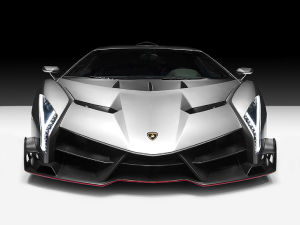

|  |
Lamborghini Veneno
|
The Lamborghini Veneno is a limited-edition high-performance supercar produced by the Italian automaker Lamborghini. It was first introduced in 2013 to celebrate Lamborghini's 50th anniversary, and only three units were produced, each of which was sold for a reported price of over $4 million.
The Veneno features a mid-engine layout and is powered by a naturally aspirated 6.5-liter V12 engine, which produces 750 horsepower and 509 lb-ft of torque. It is mated to a seven-speed automated manual transmission and Lamborghini's all-wheel-drive system.
The Veneno is built using advanced lightweight materials, including carbon fiber and other composites, which helps to reduce its weight and improve its performance. It has a top speed of 220 mph and a 0 to 60 mph time of just 2.8 seconds.
The Veneno's exterior design is characterized by sharp angles, aggressive styling, and a futuristic profile that is inspired by Lamborghini's racing heritage. The interior is minimalistic and focused on performance, with racing seats, a carbon fiber dashboard, and a high-tech instrument panel.
The Veneno was designed to be a track-focused supercar that is optimized for speed and performance. It is not intended for use on public roads and was primarily sold to collectors and enthusiasts who wanted a rare and exclusive Lamborghini.
Overall, the Lamborghini Veneno is a unique and impressive supercar that showcases Lamborghini's advanced engineering and design capabilities. It is considered to be one of the most exclusive and expensive cars ever produced by Lamborghini, and its rarity and performance make it highly sought-after among collectors and automotive enthusiasts.